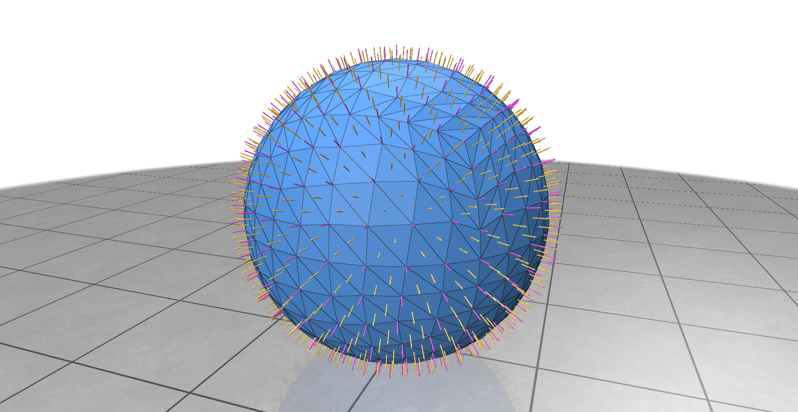
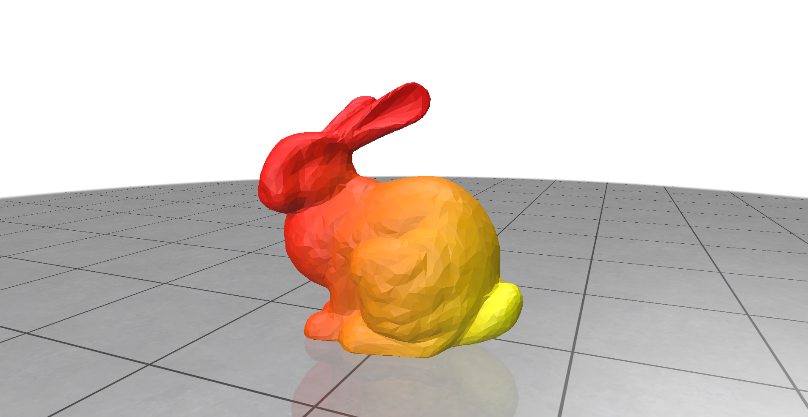

<!DOCTYPE html>

<html lang="en">
  <head>
    <meta charset="utf-8" />

    <title>GPU Mesh Processing</title>
  </head>

  <script src="https://polyfill.io/v3/polyfill.min.js?features=es6"></script>
  <script
    id="MathJax-script"
    async
    src="https://cdn.jsdelivr.net/npm/mathjax@3/es5/tex-mml-chtml.js"
  ></script>

  <style>
    * {
      margin: 0;
      padding: 0;
      box-sizing: border-box;
    }

    h1,
    h2,
    h3,
    p,
    li {
      color: rgb(232, 230, 227);
      font-family: "Trebuchet MS", "Lucida Sans Unicode", "Lucida Grande",
        "Lucida Sans", Arial, sans-serif;
    }

    h1,
    h2 {
      text-shadow: 2px 2px 2px black;
    }

    h1 {
      font-size: 5em;
    }

    h2 {
      font-size: 3em;
    }

    h3 {
      font-size: 2em;
      margin-top: 1em;
    }

    p {
      font-size: 1.25em;
      margin: 1em 0;
    }

    a {
      color: rgb(51, 145, 255);
    }

    span {
      color: rgb(232, 230, 227);
      font-size: 1.25em;
    }

    img {
      max-width: 100%;
      margin: 1em 0;
    }

    body {
      background: rgb(22, 24, 25);
    }

    .container {
      width: 80%;
      max-width: 1024px;
      margin: auto;
      padding: 2em;
    }

    .jumbotron {
      height: 30vh;

      display: flex;
      justify-content: center;

      background: url("images/diffusion.png");
      background-size: cover;
      background-position: 0 50%;
    }
  </style>
</html>

<body>
  <div class="jumbotron">
    <div class="container">
      <h1>GPU Mesh Processing</h1>
      <h2>Brennan Andruss</h2>
    </div>
  </div>
  <div class="container">
    <h3>Description</h3>
    <p>
      This project explores the use of GPUs for processing 3D meshes using the RXMesh library,
      a library for processing triangle meshes entirely on the GPU.
      To test the functionality and performance of the library, I implemented several basic mesh
      processing algorithms, including face normals, vertex normals, and heat diffusion.
    </p>

    <h3>RXMesh</h3>

    <p>
      The RXMesh library is built upon a GPU data structure based on half-edges, a common data structure
      used in computer graphics for representing triangle meshes, designed around GPU architectures for
      effective parallel processing. Meshes are divided into patches of vertices and edges, which are then
      processed in parallel across GPU cores, with each core handling a different patch.
    </p>

    <p>
      The RXMesh library provides an interface to the GPU data structure based around queries and updates
      to the mesh data. The data structure stores connectivity information between vertices, edges, and faces,
      and provides methods for querying and updating this information. The user can program queries to operate
      on individual mesh features, and the library will automatically parallelize these operations, optimizing
      computations for patches.
    </p>

    <p>
      The library contains a set of basic mesh processing algorithms to test their application. To test the
      intuitiveness of the library, I implemented additional applications using the library.
    </p>

    <h3>Face and Vertex Normals</h3>

    

    <h3>Heat Diffusion</h3>

    

    <h3>References</h3>

    <p><a href="https://ahdhn.github.io/RXMeshDocs/">RXMesh Documentation</a></p>

    <p>Mahmoud, A., Porumbescu, S., & Owens, J. <i>Dynamic Mesh Processing on the GPU.</i>
SIGGRAPH 2025.</p>

    <p>Mahmoud, A., Porumbescu, S., & Owens, J. <i>RXMesh: A GPU Mesh Data Structure.</i>
SIGGRAPH 2021.</p>

    <p> Botsch, M., et al. <i>OpenMesh: A Generic and Efficient Polygon Mesh Data Structure.</i></p>

    <p>
      Presentation:
      <a href="resources/GPU Mesh Processing.pdf" target="_blank"
        >GPU Mesh Processing</a
      >
    </p>

    <p>
      Source Code:
      <a href="https://github.com/BrennanAndruss/RXMeshApp" target="_blank"
        >RXMeshApp</a
      >
    </p>
  </div>
</body>